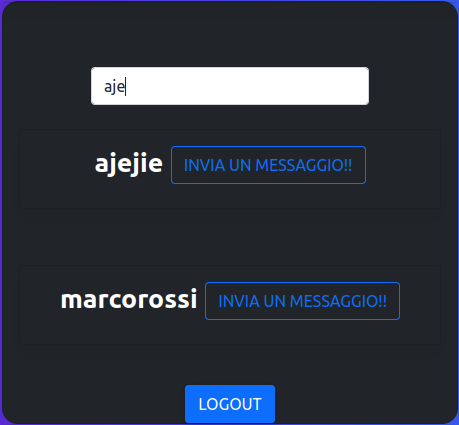
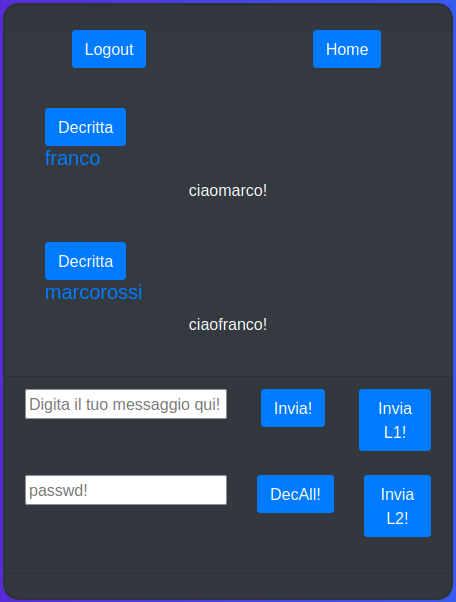
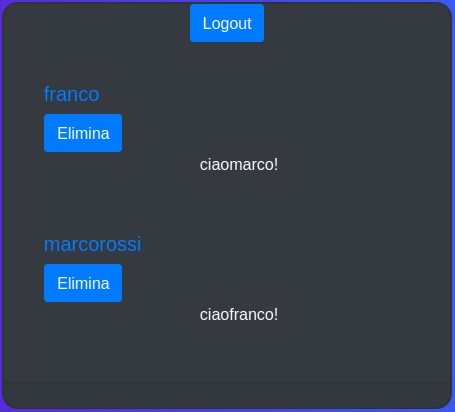

Progetto SOAsec
Alessandro Della Torre
Cosa utilizzare?
Flusso d'esecuzione

Pagine Iniziali
Server.php
include('db.php');
ini_set('display_errors',1);error_reporting(E_ALL);
require_once('./oauth/src/OAuth2/Autoloader.php');
OAuth2\Autoloader::register();
$storage = new OAuth2\Storage\Pdo(array('dsn' =>
$dsn, 'username' => $username, 'password' =>
$password));
$server = new OAuth2\Server($storage);
$server->addGrantType(new OAuth2\GrantType
\ClientCredentials($storage));
$server->addGrantType(new OAuth2\GrantType
\AuthorizationCode($storage));
Login
$log_password = md5($log_password);
$user_check_query = "SELECT * FROM oauth_users WHERE username='$log_username' AND password='$log_password' LIMIT 1";
$result = mysqli_query($db, $user_check_query);
$result_array = mysqli_fetch_assoc($result);
if ($result_array) {
$log_scope = $result_array['scope'];
$log_scope_equal = mysqli_real_escape_string($db, 'normalUser');
session_start();
$_SESSION['username'] = $log_username;
if($log_scope != null){
if($log_scope === $log_scope_equal){
$normal_location = "http://localhost/authorize.php?
response_type=code&client_id=normalUser&state=xyz&
username=".$log_username;
header('location:'. $normal_location);
}
else{
$admin_location = "http://localhost/authorize.php?
response_type=code&client_id=adminUser&state=xyz&
username=".$log_username;
header('location:'. $admin_location);
}
}
else{
exit("ERROR: problemi con lo scope nel login");
}
Registrazione
$reg_password = md5($password_1);
$query = "INSERT INTO oauth_users (username, email, password, scope) VALUES('$reg_username', '$reg_email', '$reg_password', 'normalUser')";
if (!mysqli_query($db, $query)) {
array_push($errors, mysqli_error($db));
}
else {
array_push($errors, $reg_username);
session_start();
$_SESSION['username'] = $reg_username;
header('location: http://localhost/authorize.php?
response_type=code&client_id=normalUser&state=xyz');
}
Authorize.php
// Include OAuth2 Server object
require_once __DIR__.'/server.php';
//exit("Authorize POST".$session_username);
$request = OAuth2\Request::createFromGlobals();
$response = new OAuth2\Response();
//Validazione della richiesta di autorizzazione
if (!$server->validateAuthorizeRequest($request, $response)) {
$response->send();
die;
}
// Visualizza la form di autorizzazione
if (empty($_POST)) {
exit('pagina di richiesta T/F');
}
// Se l'utente ha dato la sua auth, viene creato l'auth_code
$is_authorized = ($_POST['authorized'] === 'yes');
$server->handleAuthorizeRequest($request, $response, $is_authorized);
if ($is_authorized) {
$code = substr($response->getHttpHeader('Location'), strpos($response->getHttpHeader('Location'), 'code=')+5, 40);
// Mi faccio ritornare il client_id grazie all'auth_code, con query:
$clientId_query = "SELECT client_id FROM oauth_authorization_codes WHERE authorization_code='$code' LIMIT 1";
// Mi faccio ritornare il client_secret+redirect_uri tramite l'auth_code, con query:
$clientSecret_query = "SELECT client_secret,redirect_uri FROM oauth_clients WHERE client_id='$clientId_string' LIMIT 1";
// Richiesta CURL per ottenere l'access_token
$ch = curl_init();
$curlData = 'grant_type=authorization_code&code='.$code;
curl_setopt($ch, CURLOPT_URL, "http://localhost/token.php");
curl_setopt($ch, CURLOPT_RETURNTRANSFER, 1);
curl_setopt($ch, CURLOPT_POSTFIELDS, $curlData);
curl_setopt($ch, CURLOPT_USERPWD, "$clientId_string:$clientSecret_string");
$output = curl_exec($ch);
curl_close($ch);
$location = 'location: http://localhost/'. $redirectUri_string;
$arr = json_decode($output, true);
$accessToken = $arr['access_token'];
$_SESSION['accessToken'] = $accessToken;
$_SESSION['code'] = $code;
$_SESSION['clientSecret'] = $clientSecret_string;
$_SESSION['clientId'] = $clientId_string;
$_SESSION['username'] = $session_username;
header($location);
Pagine Principali
Index.php

// Controllo di potenziali errori
function controlResultValidity(str)
// AJAX lista utenti ricercati
function showUser(str)
// AJAX lista utenti che hanno inviato
// un messaggio all'utente
function cronologiaUser()
Message.php

// Funzione di crittazione del testo
// tramite AES
function encrypt(text, passwd)
// Funzione di decrittazione del testo
// tramite AES
function decryptV2(text, passwd)
// Controllo del token e degli errori
// ritornati
function controlResultValidity(str)
// AJAX lista dei messaggi inviati
function getMessage()
// AJAX invio messaggio senza protezione
function inviaMessaggioL0()
// AJAX invio messaggio con hash
// dello username
function inviaMessaggioL1()
// AJAX invio messaggio crittato con
// la passwd
function inviaMessaggioL2()
// Funzione di decrittazione di tutti i
// messaggi tramite password
function decriptAllMessage()
// Funzione di decrittazione del singolo
// messaggio tramite password
function decriptMessage(id)
Admin.php

// Array dei messaggi json
var parsedJSON;
function controlResultValidity(str)
// AJAX lista dei messaggi inviati
function getMessage()
// AJAX invio messaggio
function eliminaMessaggio(id)
Resource.php
// Variabili di sessione:
$username1 = mysqli_real_escape_string($db,$_SESSION['username']);
$clientId = validazioneInput($_SESSION['clientId']);
$accessToken = validazioneInput(mysqli_real_escape_string
($db,$_GET["accessToken"]));
// Verifica validità token
if($accessToken != null or $accessToken != ""){
$statusToken = validazioneToken($accessToken);
if ($statusToken) {
// Verifica tipologia di utente
if ($clientId === "normalUser") {
// Chiamata API in base al metodo
switch ($_GET["codec"]) {
case 'ricerca':
case 'cronologia':
case 'ricezione':
case 'invio':
default:
echo "errore metodo API";
break;
}
}
elseif ($clientId === "adminUser") {
// Chiamata API in base al metodo
switch ($_GET["codec"]) {
case 'ricezione':
case 'delete':
default:
echo "errore metodo API";
break;
}
}
else{ echo "Errore tipologia di utente"; }
}
else { echo "TokenScaduto"; }
}
// Chiamata della funzione di validazione del token
$statusToken = validazioneToken($accessToken);
// Funzione di validazione del token
function validazioneToken($accessToken){
// Richiesta curl validazione token
$ch = curl_init();
$curlData = 'access_token='.$accessToken;
curl_setopt($ch, CURLOPT_URL,
"http://localhost/validate.php");
curl_setopt($ch, CURLOPT_RETURNTRANSFER, 1);
curl_setopt($ch, CURLOPT_POSTFIELDS, $curlData);
$output = curl_exec($ch);
curl_close($ch);
if($output == null or $output == ""){
array_push($errors, "Errorevalidazione Token");
return false;
}
else{
$arr = json_decode($output, true);
$token_status = $arr['success'];
if ($token_status) {
return true;
} }
}